dSpark：把有信息价值的 token 提前提交，蒸馏更快的扩散语言模型
Aidar Myrzakhan 与 Zhiqiang Shen 来自穆罕默德·本·扎耶德人工智能大学（MBZUAI）VILA Lab。论文 Learning When to Commit: Schedule Distillation for Fast Diffusion Language Models 于 2026 年 10 月 26 日公开，研究扩散语言模型怎样通过改变 token 提交顺序减少解码轮次。唯一论文入口为 arXiv:2610.35804。作者的 dSpark 代码仓库 本轮可访问，已核验根目录包含 LLaDA、Dream、README 和依赖文件；本笔记依据论文全篇与附录解读，没有运行训练或复现实验。
最容易预测的 token 不一定最值得现在提交。只看当前置信度，可能先确定一批信息冗余的位置，却把能帮助其他位置的关键决策留到后面；但一次提交过多位置，又会把错误传播进后续上下文。如何学到既能加快其余位置预测、又不牺牲生成质量的提交顺序，是本文要解决的问题。
1. 背景和问题
扩散语言模型对推理效率的吸引力，来自一次前向能够同时预测多个空缺位置。自回归模型把前缀当成已知条件，从左到右逐个生成；掩码扩散模型则从部分或全部被遮住的回复开始，用双向上下文反复补全。两者对顺序的约束不同，但不能由此推断扩散模型天然就快。一次前向虽然给出了许多位置的分布，解码器仍须决定其中哪些预测已经可靠，可以写回上下文。如果每轮只提交一个位置，模型仍要反复运行大量前向；如果所有位置一起提交，就可能把尚未确定的推理关系固化成错误。本文关注的正是模型前向之后、下一轮上下文形成之前的这个决策环节。
这里的“提交”有明确含义：把某个被掩码的位置换成当前选中的 token，后续轮次把它视为可见上下文。在本文使用的单调提交设定中，错误提交不能随意撤销，因此早期错误不仅影响一个位置，还可能影响后面多个位置的预测。算术推理里的一个中间数值、代码里的变量名或运算符，都可能改变其他位置的条件分布。与之相对，“因此”“答案是”等语言连接片段可能很容易预测，却未必帮助模型完成真正的计算。dSpark 不把生成文本简单视为一组彼此独立的高置信预测，而把解码过程理解为逐步构造有效上下文。
现有置信度策略的直觉并非错误。对于已经很集中的分布，提交最大概率 token 的风险往往较低；阈值还给了实现者一个直接控制并行度的旋钮。问题在于，当前位置的可预测性和它作为上下文的价值，是两个不同的量。一个位置几乎确定，只说明模型已经知道它，不说明其他位置还需要它。另一个位置当前只有中等置信度，却可能承担消除歧义的作用，使若干相关位置立即变得确定。只按照安全程度排列提交顺序，可能付出很多轮前向来确认一批本来就容易的位置，真正的依赖关系却一直没有被解开。
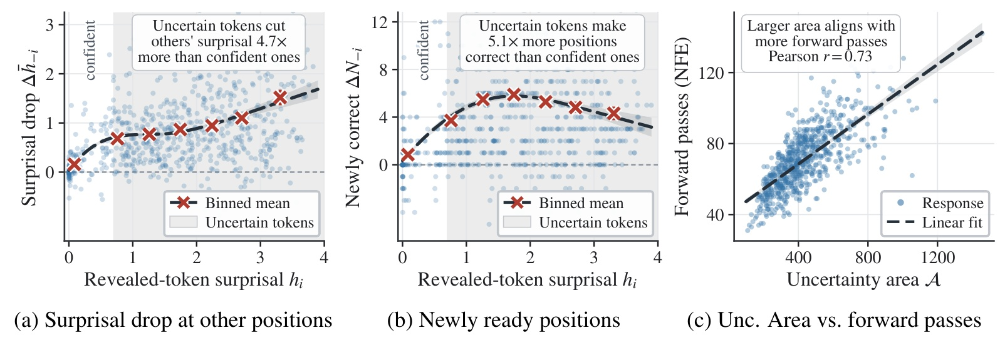
Figure 1 用正确的 GSM8K 回复做受控观察。左图横轴是被揭露 token 的参考答案惊讶度，越大表示基础模型越不相信这个参考 token；纵轴则是其他仍被掩码位置的平均惊讶度下降。中图沿用相同横轴，把纵轴换成其他位置中新增的正确最高概率预测数量。浅色点是单次揭露，红色叉号表示分桶均值；灰色区域标识原模型概率低于一半、通常会被置信度策略推迟的位置。作者观察到，揭露这些较不确定 token，平均会让其他位置的惊讶度多下降约四点七倍，使更多位置变得正确的效果约为五点一倍。这说明“当前不够确定”与“作为上下文没有价值”不能画等号。右图进一步比较同一回复的累计不确定性面积和所需前向次数，二者呈正相关，相关系数为零点七三。这里仍是对已知正确回复的诊断，不能解释为在线解码时可以知道哪个不确定 token 是正确答案，更不能解释为任意低概率 token 都应当先提交。它提供的是一个离线构造训练顺序的动机：在保证参考 token 至少合理的前提下，优先暴露那些能够帮助其余位置的信息。
原论文选择的改进位置也决定了它与缓存方法的关系。Fast-dLLM 一类工作降低一次前向的执行开销或复用缓存；dParallel、d3LLM 等方法通过训练让更多位置更早具备足够置信度。dSpark 的切入点是先构造更有帮助的可见上下文，再让模型学会适应这样的中间状态。它没有更换 LLaDA 或 Dream 的整体语言建模架构，也没有要求线上每轮搜索全部候选 token 的未来影响。其代价主要转移到了离线：先生成回复、判断正误、在正确回复上试探提交顺序，再做蒸馏。线上仍然沿用高效并行解码器，只是经过训练后，模型更可能在较少轮次里形成可以一起提交的预测。
这个设计有一个容易混淆的监督边界。构造轨迹时，作者已经拥有一条验证为正确的回复，所以能够计算某个参考 token 被揭露后，对其他参考 token 概率的影响。普通用户发来一个新问题时，系统没有这条参考回复，不能照搬离线的目标函数求最优提交顺序。方法成立的前提是：训练阶段在这类轨迹中学到的依赖关系，能够通过参数更新迁移到新的问题和模型自己生成的上下文。论文的实验就是检验这种迁移是否能在数学与代码任务上转化为更好的准确率与并行度，而不是证明一个每次都知道答案的在线调度器可用。
对于推荐系统从业者，这个问题也有具体对应。生成式召回使用离散标识符，较早位置的决策可能限定后面能生成哪些物品；并行生成一组商品或一段结构化解释时，同样存在局部容易和全局有用之间的差别。但本文的任务是数学和代码，不是推荐列表。不能把数学回复中的信息传播直接等同于物品多样性、候选覆盖或用户长期收益。更稳妥的启发是，评估生成次序时需要同时测量当前 token 的错误风险，以及提交后对其余位置的影响，二者可能指向不同的策略。
阅读性能数字时还要区分三个层次。第一层是每次前向最终提交多少有效 token，第二层是给定模型与解码策略下的正确率，第三层才是指定 GPU、缓存方式和批量大小下的每秒 token 数。论文摘要里的十点一二与五点一二对应主表的前向并行度；附录另外报告了墙钟吞吐。两类结果都存在，但不能相互替代。只有把模型训练、解码日程和底层执行配置放回各自的比较范围，才能判断 dSpark 的收益究竟来自更少的前向，还是来自每次前向更便宜。
2. 方法
2.1 从不确定性面积理解提交顺序
论文先沿用标准掩码扩散设定：一条干净回复在训练中被随机掩码，模型学习根据可见上下文重建被遮住的位置。预训练过程不要求固定的从左到右次序，推理时也就出现了选择提交日程的自由度。令一轮开始时的部分回复为状态，模型对允许更新的掩码位置同时给出概率分布；greedy token 更新可以写为原文式（3）：
符号解释：$s_r$ 是第 $r$ 轮部分可见的回复，$j$ 是位置，$\mathcal V$ 是词表，$p_\theta$ 是当前模型，$S_r$ 是本轮决定提交的位置集合。被选中位置写入模型的最高概率 token，其余位置保持原状态。日程决定的是哪些位置在何时变为可见，并不自动改变每个位置的取值规则。它与一次更新几个 token 的固定配额也不同：两个提交数相同的日程，因上下文内容不同，后续预测难度可以有很大差异。
为了量化这种差异，作者固定正确回复和冻结基础模型，用参考 token 的负对数概率定义惊讶度，再把每轮残留惊讶度累加。对应原文式（4）：
符号解释：$\theta_0$ 是冻结基础模型，$y_j$ 是正确回复在位置 $j$ 的参考 token，$M_r$ 是第 $r$ 轮仍可提交的掩码位置，$H$ 是剩余参考不确定性之和，$\pi$ 是完整提交日程，$T$ 是完成所需轮数，$\mathcal A$ 是轮次上的累计面积。这里的 $H$ 不是预测分布的香农熵，而是针对已知参考回复的惊讶度总和。把两者混用，会误以为线上无需参考答案也能计算同样的调度信号。
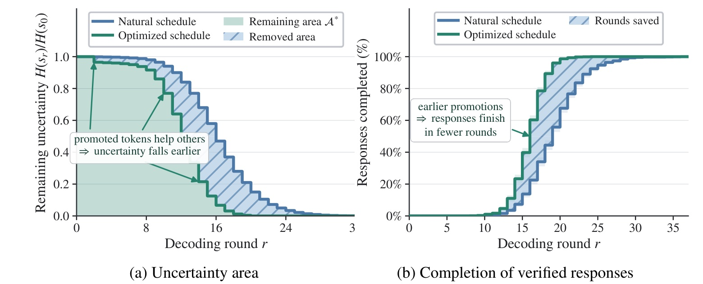
Figure 2 左图以轮次为横轴、归一化剩余不确定性为纵轴，蓝色是原日程，绿色是优化后的日程。两条轨迹最终揭露的是同一个回复，因此曲线差别来自提交顺序，而不是改变了答案内容。绿色曲线在中间较早下降，使被阴影标出的累计面积减少；其含义是关键上下文提早生效，后续若干轮都在更容易的预测问题上运行。右图展示到某轮为止已经完成的正确回复比例，绿色曲线整体靠左，说明同一批验证回复能用更少轮次完成。两图合起来支撑的是一个局部、可解释的优化方向，而不是全局最优日程的证明。不确定性面积与前向轮数相关，也不意味着任意减少面积的策略都能在未知答案上保持正确。工程上可以把面积当作离线筛选或诊断信号，在线是否真正变快还必须看训练后的模型与实际解码器；论文后续的配方、校准和墙钟实验分别检验这些连接。原图左子图最右的三十二刻度在作者排版中只露出首位，截图保留该原始瑕疵，没有补画数字。
2.2 不确定性引导的离线调度构造
日程构造以一条正确回复为固定目标，从自然日程开始，在每个状态寻找值得提前揭露的位置。直接把所有正确 token 都当成候选，会引入太强的答案泄漏：有些参考 token 在当前上下文下几乎不可能由模型产生，强行暴露它们只会制造脱离模型能力的中间状态。作者因此先设合理性过滤，保留原模型尚未完全排除的参考 token，即原文式（5）：
符号解释：$C_r$ 是本轮候选位置，$p_{\min}$ 是参考 token 的最低概率，$k$ 限定它在该位置词表概率排序中的最高排名。实验使用最低概率 $0.02$ 和前十名约束。这是合理性过滤，不能解释为要求候选已经很有信心；概率阈值过高会把最有帮助的一批中等置信位置排除，排名约束又能避免平坦分布中太多弱候选进入搜索。每个候选还要额外做一次前向来测量影响，所以过滤也控制离线计算成本。
在相同起始状态上，分别只揭露一个候选参考 token，比较其余位置的惊讶度下降。选择规则是原文式（6）：
符号解释：$s_r^{(i)}$ 是只把位置 $i$ 揭露为参考 token 后的状态，$i_r^*$ 是最有帮助的候选，求和显式排除了被揭露位置本身。这个排除很关键：如果把自身也算进去，直接揭露一个当前最不确定的位置，就会机械地减少很大一块惊讶度，却未必帮助其他位置。本文只在最大影响为正时进行提升，没有正收益就跳过该操作。连续执行得到优化轨迹，保留其中的中间状态与正确回复，供下一步蒸馏使用。
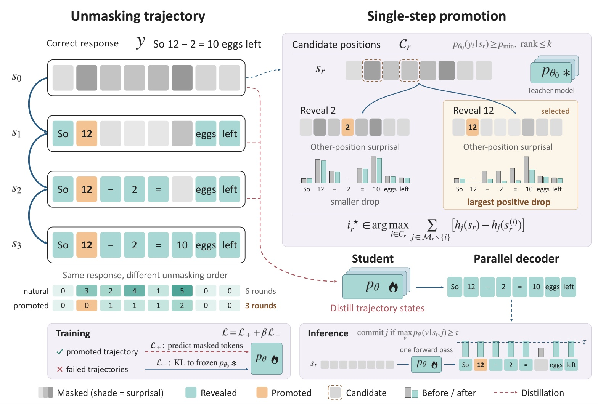
Figure 3 左上固定“十二减二等于十”的正确短回复，灰色深浅表示剩余位置的惊讶度，橙色表示被提前提升的 token，绿色表示已经揭露的其他 token。原日程和优化日程最终内容相同，但先揭露有帮助的数值后，后面的表达能更早确定，图中示意从六轮缩短到三轮。右上把两个候选都从同一状态出发，分别揭露“二”和“十二”，比较其他位置惊讶度的总下降；它体现的是受控反事实试探，不能在试探之间继续累加不同上下文。右下的学生和并行解码器之间没有候选搜索回路：学生训练好以后，只做通常的模型前向与置信度判断。左下把正确轨迹监督与失败轨迹上的分布约束分开，前者提供明确参考 token，后者只要求靠近冻结基础模型。图内所谓一次前向，是指一轮同时产生多位置分布，并非整个回复只需一次模型调用。这个区别决定了方法能否实际部署：昂贵的影响评估留在离线，线上依靠参数内化的依赖关系节省迭代轮次；若把右上的搜索搬到线上，就会抵消前向次数减少带来的收益。
图中还有一个训练实现上的因果边界：所有候选影响都由冻结教师评价，学生并不反过来改变已经离线固定的正确回复，所以轨迹构造与适配器训练可以分开执行。被提升的位置先改变可见上下文，再通过其他位置的概率变化评价收益，最终优化的仍是完整回复的重建，而非只训练橙色 token。每一步状态都会给学生提供多个剩余位置的监督，因而一个被提前暴露的信息节点，可以同时改变许多位置的学习样本。这个过程解释了日程为何能影响参数，而不只是改变推理时的一个排序列表；也提示复现时应保留中间状态与掩码，而不能只把优化后的完整回复当成普通监督文本。
2.3 调度蒸馏与失败轨迹上的分布约束
有了优化轨迹，学生在其中的部分可见状态学习重建正确回复。论文没有单独训练一个在线日程控制器，而是直接微调骨干，让模型在更有帮助的上下文次序下，尽早形成可靠的剩余预测。正轨迹目标为原文式（7）：
符号解释：$D_+$ 是正确回复及优化中间状态的分布，$s_r^*$ 是优化轨迹状态，$\ell_{\mathrm{CE}}$ 在仍掩码的位置上平均交叉熵，$\ell_{\mathrm{sharp}}$ 是锐化项。交叉熵教学生预测正确 token，锐化则只在学生当前最高概率 token 已经等于参考 token 的位置上，最小化预测熵，使其更早越过提交阈值。后者不能给所有位置无条件施加，否则会鼓励模型把错误也变得更确信。
锐化的风险仍未完全消失。一个位置只在当前训练状态上被确认正确，更新的参数却会影响许多其他状态；学生可能在失败轨迹中同样变得过度自信。回复整体错误又不能告诉我们每个 token 是否错误，因此作者没有用失败回复的 token 直接做监督，而是在失败轨迹采样的状态与位置上，以冻结基础模型为锚，使用原文式（8）：
符号解释：$D_-$ 是失败轨迹上抽取的状态与位置，两个模型接收同一个状态，KL 的方向是基础模型分布到学生分布。该损失要求学生在缺乏可靠 token 标签的地方不要随意改变原有分布，而不是学习失败答案。正确轨迹不施加这个 KL，因此加速学习与保守约束被放在不同数据区域。它既不保证任何状态完全保真，也不是把所有错误位置都识别出来；只是用更可信的基础分布限制错误置信度外溢。
完整目标对应原文式（9）：
符号解释：$\beta$ 是负轨迹约束强度，主实验取一。这个形式表面简单，实质上由轨迹分布、锐化位置选择和正负数据混合共同决定效果。训练使用低秩适配器，评估前合并进骨干；推理采用类似 d3LLM 的多块解码，置信度阈值在零点九到零点九五之间，当前块与下一块可同时处理。默认块长三十二、最多生成二百五十六个新 token，主结果不使用 KV cache。训练阶段提供更好的可见状态，推理阶段仍根据自身预测决定提交，这条分工是 dSpark 的核心，也解释了为什么必须用真实生成质量来验证离线日程信号的价值。
3. 实验结果
3.1 主结果与准确率边界
作者分别为两个骨干构建蒸馏数据，原始来源为 GSM8K、PRM12K、NuminaMath-CoT 和 AceCode。LLaDA 收集五万二千条正确轨迹与三万八千条错误轨迹，Dream 为八万条正确与五万七千条错误；训练保留全部正确轨迹，再把错误轨迹抽到四比一，实际分别使用一万三千和两万条错误轨迹。这个比例针对轨迹，不是 token 或中间状态数量。训练用四张 A100-SXM4、数据并行与 ZeRO 第二阶段，无 CPU offload；适配器秩和缩放系数都为二百五十六，学习率为二乘十的负五次方，批量六十四，训练六轮。评估三次独立运行平均，不等于三次独立训练种子结果。
数学评估包含零样例 GSM8K、四样例 MATH，代码评估包含零样例 HumanEval 和三样例 MBPP。数学指标为答案准确率，代码为一次生成通过测试的比例。TPF 是全测试集有效生成 token 数除以前向调用总数，排除结束符填充；因此它既受日程影响，也受生成内容和长度影响。AUP 则把准确率与并行度结合，原文式（10）为：
符号解释：$\rho_i$ 是按大小排列的 TPF，$y_i$ 是对应准确率，$y_{\max}$ 是该基准最高准确率，$\alpha$ 取三。仅保留准确率不低于起始点五个百分点的点；各方法提供一个每前向一 token 的点和报告工作点。它是特定规则下的综合度量，不能当作单位时间成功样本数，也不应忽略与原模型比较时实际损失的准确率。
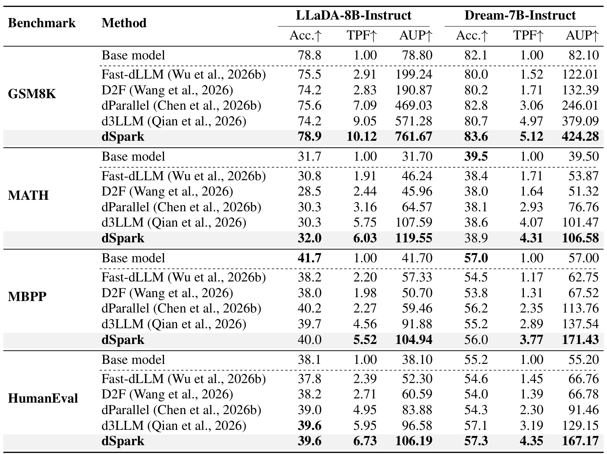
Table 1 左右各自对应一个骨干，行按任务分组；先看同骨干同任务的准确率，再比较 TPF，最后才看综合 AUP。LLaDA 在 GSM8K 上从基础模型百分之七十八点八变为百分之七十八点九，TPF 从一提高到十点一二；对比 d3LLM 的百分之七十四点二与九点零五，它同时保住更多正确答案并增加并行度，AUP 从五百七十一点二八升到七百六十一点六七。Dream 的 GSM8K 则从百分之八十二点一到八十三点六，TPF 五点一二，准确率差是一点五个百分点。表格也明确给出反例：Dream 的 MATH 准确率三十八点九低于基础模型三十九点五；MBPP 中 LLaDA 四十点零低于四十一点七，Dream 五十六点零低于五十七点零。因而“维持质量”应理解为在较大并行度下相对其他加速方法取得更好的折中，不能扩展成所有任务无损。HumanEval 中 LLaDA 与 d3LLM 的准确率同为三十九点六，优势主要来自 TPF 五点九五到六点七三；Dream 的准确率和并行度都增加。跨任务比较时，这些不同收益来源必须保留，否则综合指标容易掩盖更具体的行为变化。
从具体对照看，TPF 的领先幅度在任务间也不同。LLaDA 的 MATH 从 d3LLM 的五点七五到六点零三，增量远小于 GSM8K 相对基础解码的十倍级差异；Dream 的代码任务则有更明显的增量，MBPP 从二点八九到三点七七，HumanEval 从三点一九到四点三五。主表的四组结果不能压缩成一个统一加速倍数。AUP 的最高值同时受到基础准确率、加速后准确率和两点连接规则影响，因此也不能跨任务直接比较绝对大小。对于复现者，应先确认同一任务中的基础模型工作点和最大长度，再检查相同口径下的增量；数学答案评判与代码测试通过也分别具有不同的误差来源。
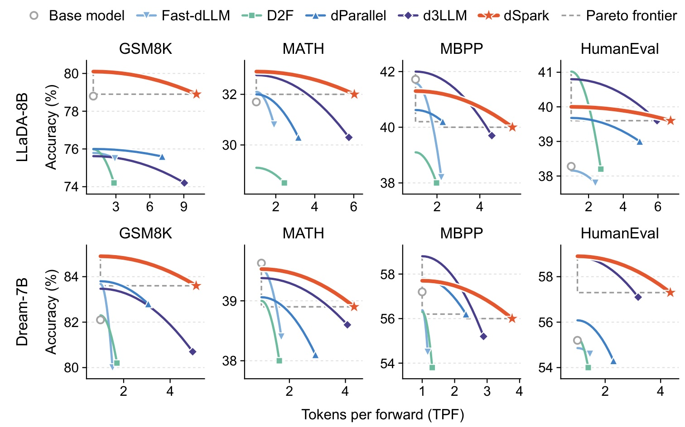
Figure 4 把主表展开成两行四列，每行一个骨干，每列一个任务。横轴越大表示一次前向产生的有效 token 越多，纵轴越高表示正确率越高；橙色星号是 dSpark 的报告工作点。GSM8K 中橙色点同时位于较右侧和较高位置，主张比较强；MBPP 中它虽然在右侧，却低于自身单 token 解码的高准确率端点，显示并行化仍有代价。图里的弧线连接每种方法的两个报告点，并不表示沿曲线每个位置都做了独立测量，不能把曲线形状解释为完整阈值扫描的实测结果。灰色虚线画出比较点之间的帕累托边界，帮助区分“更快但更差”与“两维都更好”。就工程决策而言，如果业务设定的是严格质量底线，那么落在较高 AUP 区域也可能仍不满足门槛；需要在自己的阈值与长度设置下重新测量工作点。图表支持本文改善并行度与质量的取舍，但并没有给出一个适用于所有任务的统一最佳阈值。
这也意味着图中的平滑线段只是比较辅助，最稳妥的事实仍然是星号、菱形与其他标记对应的离散工作点，不能对两个测量点之间的连续性能作额外承诺。
3.2 调度和 KL 的互补作用
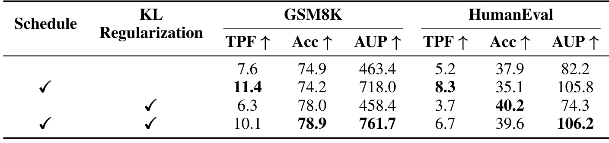
Table 2 的两个勾选列分别控制优化日程和 KL，后面是 GSM8K 与 HumanEval 的 TPF、准确率、AUP。没有两项组件时，GSM8K 为七点六 TPF、百分之七十四点九准确率；只有日程后并行度提高到十一点四，但准确率降到七十四点二。HumanEval 的相同变化更明显：TPF 从五点二到八点三，准确率却从三十七点九降到三十五点一。这说明更有帮助的提交顺序确实推动更激进的并行预测，但参数更新的副作用不能被忽略。只加 KL 时，准确率回升而并行度下降；两个组件一起使用，则得到 GSM8K 十点一 TPF、七十八点九准确率，以及 HumanEval 六点七 TPF、三十九点六准确率。主张应当是两种机制互补，而不是调度本身同时保证全部质量。尤其 HumanEval 的 KL 单独版本四十点二，比完整版本三十九点六还高，完整方法赢在综合取舍。一个值得复现的细节是，日程如何改变学生见到的中间状态，KL 又覆盖哪些失败状态；仅按公式把两个损失相加，不复现这些采样范围，未必得到相同结果。
四个配方也帮助区分监督量与监督位置的作用。没有优化日程时，模型仍然能通过轨迹训练获得一定并行度，所以完整方法的优势不能全部归因于首次引入轨迹蒸馏；它改进的是这批轨迹中哪些 token 已经可见。没有 KL 时，日程带来的更高置信度可能扩散到未被正确样本覆盖的失败状态。反过来，只有 KL 会约束参数变化，使学生不易偏离原有慢但保守的分布。两者在不同状态区域施加不同要求，才有可能同时保持加速与质量。表中这些对照都是同骨干同任务内的配方比较，不涉及更换模型规模，因此比只对比最终方法名称更能定位收益来源。
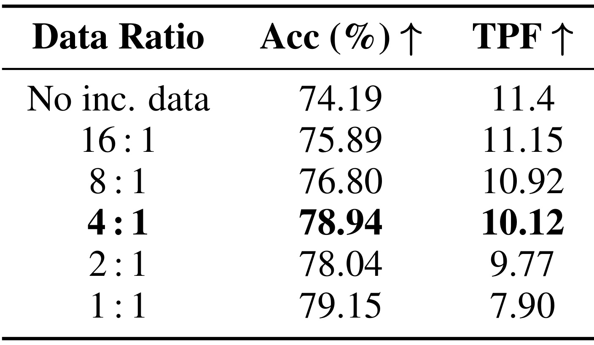
Table 3 把正确轨迹保持为主体，逐步增加失败轨迹的 KL 锚定。没有错误数据时，TPF 十一点四最高，但准确率仅七十四点一九；四比一时达到七十八点九四与十点一二，是作者采用的工作点。一比一获得七十九点一五的更高准确率，却把 TPF 降到七点九，说明选择并非单独追求准确率最大。比例变化也不是严格单调的：二比一的七十八点零四与九点七七，两项都弱于四比一。表格不能支持“失败样本越多越好”，更不能说明存在普遍的四比一最优比例，因为只验证了一个模型和任务。作者还把 KL 数据换成一组不重叠的正确轨迹，保持四比一后，准确率降到七十七点一，TPF 下降约三成；这支持失败状态分布对约束作用有意义，而非任意额外数据都能同样稳定锐化。不过没有完整训练多种子的区间，因此小幅差别仍应保留随机性解释，后续迁移到其他任务时需要重新观察实际失败模式与置信度分布。
一个需要补充的读法是，比例的分子和分母都是完整生成轨迹，然而正轨迹与失败轨迹进入训练目标的方式不同。正轨迹有目标 token 的交叉熵，还附加条件锐化；失败轨迹只在采样位置上匹配基础模型分布。因此四比一并不能翻译成四份正确标签对一份错误标签，也不能认为学生在学习错误回复。选择更多失败轨迹可能增强保守锚定，但也会减少更新朝向激进并行预测的空间。表格中的非单调点提醒我们，数据混合不是简单线性插值，实际中间状态分布、训练随机性和有限优化预算都可能影响最终工作点，不能靠比例本身给出因果保证。
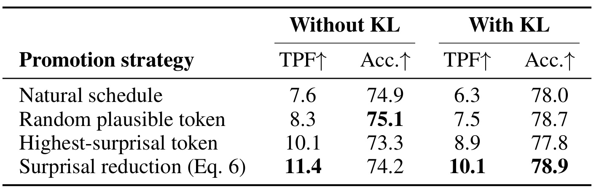
Table 11 进一步区分“优先最难位置”和“优先最有帮助位置”。无 KL 时，随机选合理 token 只有八点三 TPF，选择自身惊讶度最高者达到十点一，但准确率降到七十三点三；使用对其他位置的总帮助则得到十一点四与七十四点二。有 KL 后，本文准则达到十点一 TPF、七十八点九准确率，最高惊讶度准则为八点九、七十七点八；随机准则为七点五、七十八点七。后一对照尤其说明，准确率接近时，影响准则仍增加了有用并行度。它验证了式（6）排除自身位置、测量上下文影响的设计，而不是仅仅挑选低置信 token。附录还检查二百四十个可提升状态，每个概率区间八十个；最低概率桶中提前提交与不提交的准确率同为八成，但完成所需前向从三十八点一降到三十一点六。其他桶准确率存在双向小变动，因此更准确的说法是这个小样本没有显示系统性质量损失，不能把它当成无损保证。最低概率和排名阈值仍使离线目标依赖参考答案，只是限制到模型认为合理的范围内。
这个消融还有一个有用的反例：无 KL 时，随机策略的准确率七十五点一高于本文影响准则七十四点二，说明后者并不是在单独优化即时准确率。它牺牲一部分保守性以换取更大并行度，再由失败轨迹上的锚定补回质量。若实际任务不能提供可靠正误判断，或者失败轨迹和部署分布差别很大，这个补偿链条就可能失效。最直接的检验应把日程影响、锐化程度和错误高置信率一起记录，而不是只看某个候选位置是否容易预测；这也对应论文从动机图到训练消融再到校准分析的证据顺序。
KL 权重敏感性也揭示了相同取舍。GSM8K 中权重从零到一，准确率由七十四点一九提高到七十八点九四，TPF 从十一点四降到十点一二；继续到二，只增加零点一六个百分点准确率，却把 TPF 降到八点一。附录同表使用 MATH-500，不能把它的三十四点四零与主表 MATH 的三十二点零直接比较，二者评估口径不同。保留这个差别，才能避免把敏感性实验误解为主实验数值不一致。
3.3 墙钟吞吐与缓存
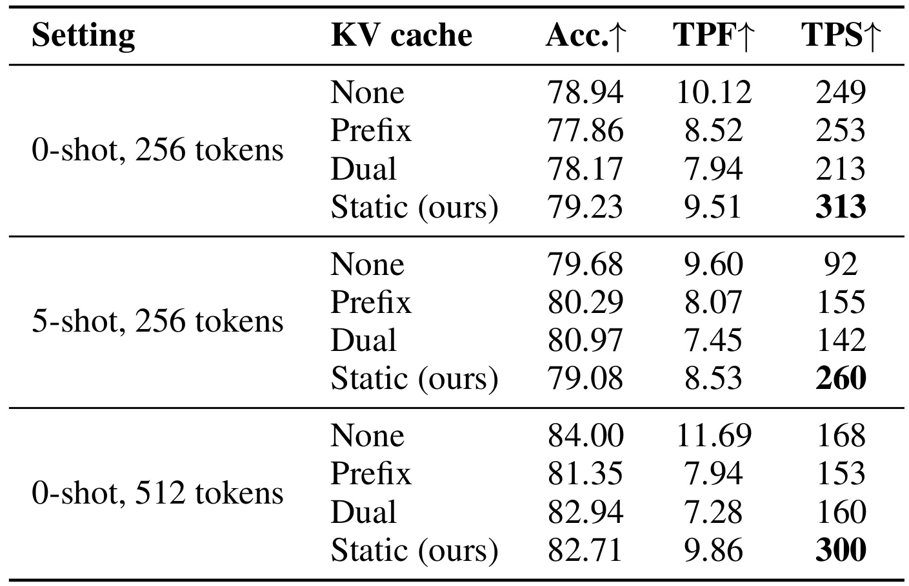
Table 4 是将并行度连接到真实执行效率的关键证据。列中的 TPS 才是每秒 token 数，测试限定 LLaDA、GSM8K、A100-SXM4 与单请求批量。短提示二百五十六 token 设置下，无缓存为二百四十九 TPS；前缀缓存二百五十三，双缓存二百一十三，表明缓存并不自动更快，因为近似上下文和刷新策略还会改变所需前向数。五样例提示下，无缓存只有九十二 TPS，而前缀缓存提高到一百五十五，收益更明显，说明提示长度影响每轮重复计算占比。作者的静态缓存把每步执行捕获为 CUDA graph，保留提示与已提交位置的键值，每轮重新计算活动窗口、其后一个块及轮换的六十四个缓存位置，从而周期性刷新历史。它在三种设置分别达到三百一十三、二百六十和三百 TPS，但准确率相对无缓存也会改变：五百一十二 token 时从八十四点零零降到八十二点七一。这里的缓存优化属于独立系统组件，不能把静态缓存与调度蒸馏所有收益混在一个数字里。表格说明减少前向和降低单步成本可以配合，也显示准确率、TPF、TPS三列并不总是同方向变化。
静态缓存的刷新范围还决定它不是完全精确复用所有历史状态。已提交 token 的键值并非永不更新，而是结合活动窗口和轮换历史切片逐步刷新，从而平衡重新计算与上下文陈旧。五样例设置下静态缓存的 TPF 八点五三低于无缓存九点六，却因每轮成本降低，TPS 从九十二到二百六十，正好展示了两个效率指标为何需要并列报告。相反，短提示的双缓存即使也复用了历史，TPS 仍低于无缓存。复现时只匹配缓存名称而不匹配刷新策略、窗口与图捕获方式，无法视为同等执行条件。
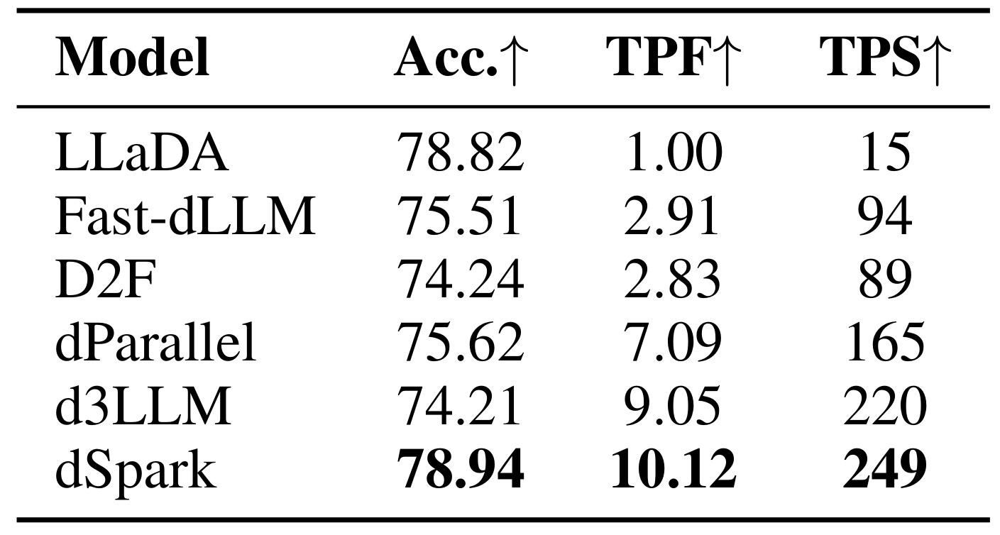
Table 5 在共同的单批量设置下给出六种方法。基础 LLaDA 为十五 TPS，dSpark 为二百四十九，因此作者报告十六点六倍的墙钟吞吐；相对 d3LLM 的二百二十 TPS，则是约百分之十三点二，而不是十倍级优势。两者分母代表不同问题：前者说明相对保守原始解码的总体潜力，后者更接近当前高效解码方案之间的增量。同时 dSpark 准确率七十八点九四，高于 d3LLM 七十四点二一，说明这个工作点的增量并非靠进一步牺牲准确率取得。表中 TPF 十点一二与墙钟十六点六倍不是同一个指标，因为不同方法的一次前向处理范围、有效输出长度和运行实现不同；不能把主表每前向 token 倍数改写成所有硬件都适用的时间倍数。此实验提供了真实硬件证据，但尚不涵盖大批量、并发请求、不同 GPU 或长工具调用会话，也没有把离线轨迹搜索和六轮适配器训练成本计入每次服务吞吐。若部署请求量有限，必须另外计算训练成本如何摊销；若请求量大，则需要看并发下吞吐和尾延迟能否保留优势。
吞吐数字还必须和比较对象的任务正确率一起看。基础解码虽然慢，但它是接近原骨干质量的参照；dParallel 和 d3LLM 是更高效的系统参照，分别给出不同的质量损失。dSpark 的二百四十九 TPS 并不说明已经超过自回归语言模型，也不说明相同规模的所有骨干都能得到这个绝对吞吐，因为表中没有这种比较。作者使用相同的扩散模型家族与数学测试集，能够支持的是这些具体方法之间的工作点比较。面向在线服务时，另需记录输入长度分布、生成停止位置和成功样本的平均成本，避免每秒 token 数提高而用户完成任务的总时间没有相应改善。
3.4 校准、长度泛化与案例
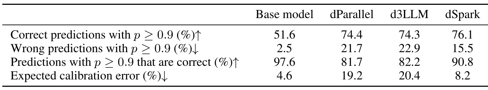
Table 8 从二百五十个测试 GSM8K 样本的自然日程中，记录每轮每个掩码位置的最高概率预测。第一行是在正确预测中，概率至少零点九的比例；第二行是在错误预测中，同样高置信的比例；第三行反过来以全部高置信预测为分母，统计其中正确的比例。因此七十六点一、十五点五和九十点八不能直接相加，也不能把第二行当作全体 token 错误率。dSpark 对正确预测的高置信程度与另外两个蒸馏方法接近，但对错误预测的高置信比例更低，支持失败轨迹 KL 抑制过度自信的解释。基础模型只有百分之二点五的错误预测被高置信提交，明显比 dSpark 的十五点五更保守；其 ECE 四点六也低于 dSpark 八点二。因此本文改善的是加速模型之间的可靠性，没有恢复到原模型的全部校准水平。统计覆盖特定样本与自然日程，真实学生在线生成的状态分布可能不同，后续还需要在实际活动窗口和停止策略下验证。
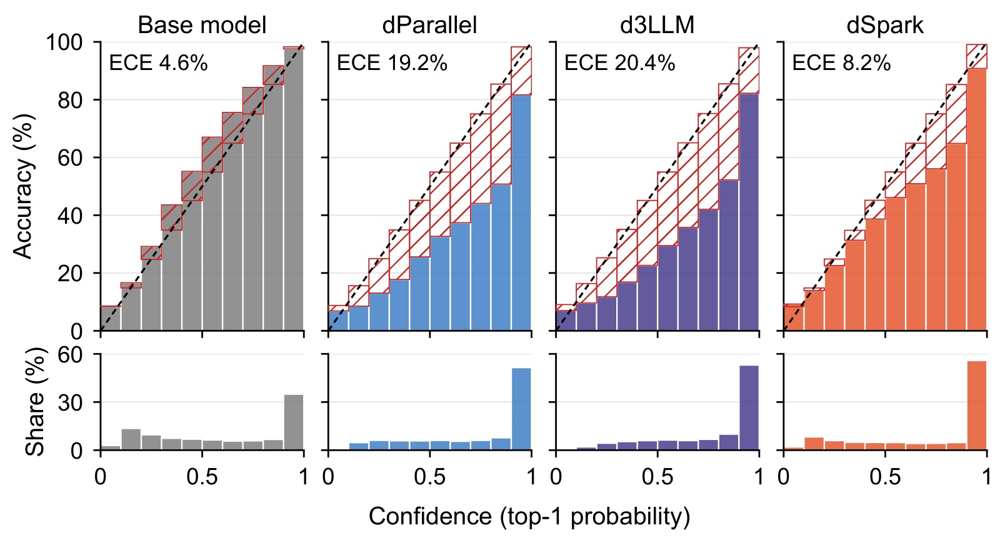
Figure 5 的上排横轴为最高概率预测的置信度分桶，纵轴为该桶实际正确率，黑色对角线表示理想校准，红色斜线区域表示置信与实际正确率之间的差距。下排给出各桶样本份额，避免只看稀疏小桶得出整体结论。基础模型的柱顶较贴近对角线；dParallel 与 d3LLM 多数高置信桶存在明显过度自信；dSpark 的差距缩小，但并未消失。例如零点八到零点九置信区间中，两种对照的实际正确率约为五成一和五成二，dSpark 约为六成五，仍低于所报置信度。其最高桶样本份额还略高于两种对照，说明不能只凭更多 token 越过阈值就判断质量，必须同时看误差水平。把上排差距和下排权重一起读，才能理解 ECE 为什么下降、又为什么仍高于基础模型。对需要可靠置信度控制的推荐或结构化生成任务，这比单一平均准确率更接近解码器实际使用信号的方式。
长度扩展提供了额外边界。附录将最大生成长度设为一百二十八、二百五十六和五百一十二，LLaDA 的 GSM8K 在三个长度上均达到或超过基础模型准确率，TPF 分别为八点八五、十点一二、十一点六九；MATH 在最短长度时三十点五低于基础模型三十点八六，较长设置才超过。因此不能把“跨长度有效”解释为任何输出预算都无损。知识测试中，Table 7 给出 MMLU 六十三点一对基础六十三点零、ARC-C 四十七点二对四十七点六；正文把 MMLU 概括为匹配六十三点零，笔记以表中数字为准，将其视为近似保留而非能力提升证据。
两个定性算术例子也有助于理解收益范围。树莓数量题中，四种模型答案都正确，dSpark 用十七次前向生成二百零二 token，基础模型用一百九十九次前向生成一百九十九 token；这展示同一正确任务上的并行差别，但输出长度不完全一致。另一道薪资题中，dSpark 正确计算加薪后的周薪与全年收入，用二十八次前向，其他展示回复存在忽略加薪、算术错误或长度截断。它说明加速并不必然破坏推理，但两个精选例子不足以证明某类错误已被系统消除。真正支撑主张的仍是全量基准、组件消融、校准统计和限定硬件的墙钟测量。
4. 总结
dSpark 最值得保留的认识，是把一次提交的价值从“这个位置有多确定”拓展到“它能让其余位置多快变得可确定”。离线固定正确回复、测量其他位置惊讶度下降，是一个能够和模型条件分布直接连接的信号；通过中间状态蒸馏，昂贵搜索不需要留在线上。正轨迹上的重建与正确位置锐化，让并行提交更积极，失败轨迹上的分布锚定则约束这种积极性向错误状态外溢。实验没有把这几个环节混成单一黑盒：优化日程、KL、错误数据比例、promotion准则分别被检查，因而可以判断哪些收益来自顺序，哪些来自质量保护。
工程应用上，应把它理解为训练和执行共同决定的工作点。对于已经采用扩散骨干、请求量足够大、能验证数学或代码样本正确性的服务，离线轨迹搜索可能值得摊销；对于难以判断回复正误的开放生成，构造同等可靠的正负轨迹更困难。推荐列表生成若要借鉴，需要先定义能够验证的项目级或列表级目标，再判断参考序列的顺序是否本来就具有唯一性。用户偏好往往有多解，把某个参考物品序列当成唯一正确 token 序列，可能会把多样性收紧成标签模仿，这不是原论文已经验证的迁移结论。
需要明确保留四类局限。第一，日程构造依赖正确参考回复和额外候选前向，论文没有把这部分成本折算为全生命周期收益，训练数据获取也可能限制扩展。第二，准确率并非处处无损，Dream 的 MATH 与两种骨干的 MBPP 都有相对基础模型的退步，实际业务必须先规定可接受门槛。第三，校准改善仍不等于原模型校准，错误预测中的高置信比例与 ECE 均高于基础模型，强阈值策略仍会固化错误。第四，墙钟结果限定单批量 A100 与数学任务，无法直接推出并发服务、其他 GPU、长上下文或工具调用任务的尾延迟收益。三次评估平均也不能取代独立训练种子和置信区间，微小准确率优势不宜解释得过强。
后续可优先做三件具体验证。首先固定输出预算、缓存实现和解码阈值，分别复现 TPF、实际每秒 token 与成功样本吞吐，检查更少前向是否在自己的硬件上兑现。其次记录错误轨迹来源与 KL 采样位置，比较错误类型改变后，四比一混合和权重一是否仍是合适的取舍，避免沿用默认值却忽略状态分布。再次在新任务上同时测量提交风险与上下文帮助，包括失败样本和非唯一参考答案，确认离线影响信号是否仍能迁移。代码仓库已能访问，为这些检查提供了起点，但本轮没有运行作者代码、训练模型或独立复现实验；所有数值均为论文报告，应与独立验证结果分开理解。
另一个值得追踪的方向是离线构造的可扩展性。式（6）对候选逐个做前向，当回复更长、候选更多时，日程搜索本身可能成为新的训练数据瓶颈。可以先在不改变原有质量验证的前提下，记录每条轨迹的搜索前向数、被提升位置数与最终节省轮次，判断收益是否集中在少数困难样本。只有知道这条成本分布，才有依据决定是扩大语料、精简候选，还是只对特定任务蒸馏；本文还没有给出这种全生命周期的选择结论。